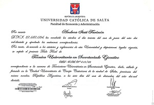

DATOS PERSONALES:
Edad: 29 años
Dirección: Barrio "La Florida"-Monte Caseros
OBJETIVO PROFESIONAL:
Insertarme en actividades relacionadas al sector administrativo-contable.
PERFIL PROFESIONAL:
Como Técnica en Secretariado Ejecutivo mi formación académica me ha brindado la preparación contable, los conocimientos y habilidades necesarios para la adecuada organización, administración y funcionamiento de la oficina. Me ha provisto de habilidades comunicativas y sociales que he reforzado en mi trabajo actual. Además, soy capaz de adaptarme a los cambios y desafíos que el puesto de trabajo presente, y una entusiasta de la capacitación constante, buscando siempre optimizar mi desempeño.
Estudios
Universidad Católica de Salta
Técnica Universitaria en Secretariado Ejecutivo - 2016
Escuela Familiar Agrícola (E.F.A Mocoví is-23)
Educación secundaria con orientación en Ciencias Naturales -2011
Acceda al título y al analítico universitario ↴
Experiencia laboral
- Biblioteca Popular Marcelino A. Elizondo (2019-actualidad)
- Empleos en comercios:
~ Panadería "La Estrella" (2015) - Atención al público y caja
~ Comercio "DelfiPlas" (2013-2015) - Deposito y repositora
Cursos
Herramientas digitales y de software
- Word
- Excel
- PowerPoint
- Nube
- Zoom
- Canva
- Mecanografía
- Desarrollo Web
- Creación de contenido digital (Youtube y redes sociales)
- Manejo de páginas de AFIP y DGR
Aprendo con facilidad cualquier herramienta informática
Celular:3775-456293